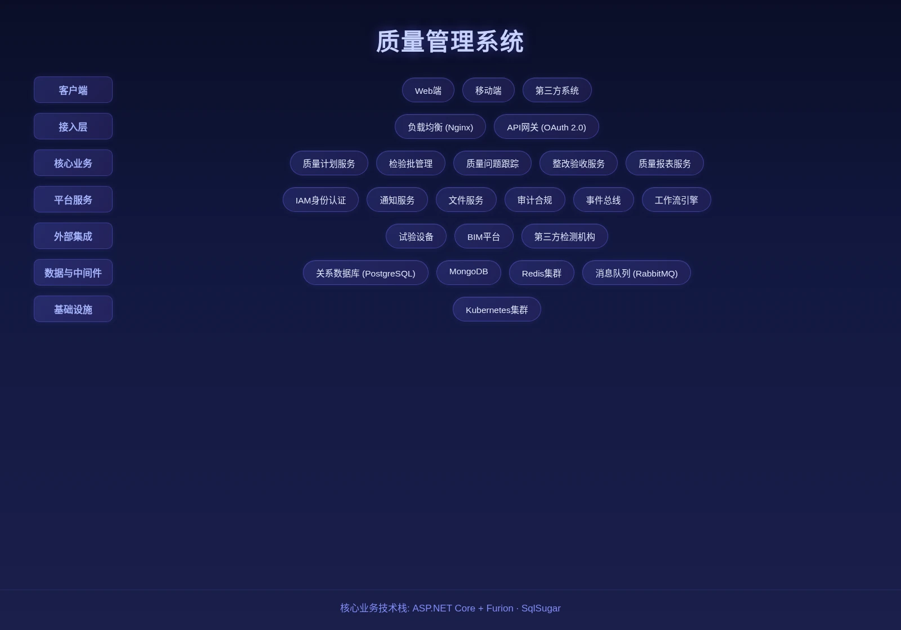

质量管理系统是面向土木工程项目的全生命周期质量管理平台。针对施工质量直接关系到工程安全与使用寿命、传统管理方式难以及时发现并整改质量问题的痛点，系统通过工序巡检、首件验收、旁站监督与奖罚追溯等功能，实现工序巡检、问题闭环与质量追溯，帮助企业及时发现并整改质量问题，确保每道工序符合技术标准，推动施工质量持续改进。

核心功能
系统覆盖质量巡检、奖罚管理、首件制与旁站值班四大核心模块，构建质量全生命周期管理。
质量巡检
开展工序质量巡检，记录检查发现的问题并跟踪整改闭环。
奖罚管理
记录质量问题相关的责任处罚与质量达标奖励。
首件制管理
对批量施工前的首个样板进行专项验收与归档，通过验收的首件作为后续施工的质量参照标准。
旁站值班管理
对关键工序和高风险作业实施现场旁站监督。
系统架构

Quality Closed Loop
系统采用质量全生命周期管理架构：巡检→问题记录→整改→复核闭环；与BIM轻量化系统联动，在三维模型中标注质量问题位置；支持中英双语质量记录，满足中国工程技术标准与尼日利亚本地标准双重要求。
应用场景
适用于施工工序质量巡检、首件样板验收管控、关键工序旁站监督、质量问题奖罚追溯等场景。

施工工序质量巡检
开展工序质量巡检，记录检查发现的问题并跟踪整改闭环，确保每道工序符合技术标准。

首件样板验收管控
对批量施工前的首个样板进行专项验收与归档，通过验收的首件作为后续施工的质量参照标准。

关键工序旁站监督
对关键工序和高风险作业实施现场旁站监督，确保施工过程符合质量要求。

质量问题奖罚追溯
记录质量问题相关的责任处罚与质量达标奖励，奖罚分明推动质量持续改进。
优势与案例
双标准合规
满足中国工程技术标准与尼日利亚本地标准双重要求，适配跨国工程管理场景。
BIM 联动定位
与 BIM 轻量化系统联动，在三维模型中精准标注质量问题位置，直观定位，整改追踪可视化。
中英双语记录
支持中英双语质量记录填报与报告输出，满足中外籍管理人员协同需求。
首件制管控
首件验收作为后续施工参照标准，从源头把控施工质量，不合格不进入批量施工。
整改闭环追踪
质量问题从发现、下发、整改到验收复验全链路闭环，责任到人、限期到点。
工序巡检
支持按工序节点设置巡检计划，现场拍照、签字、评分一步完成，过程质量可控。
需求调研
深入了解项目质量管理体系与施工标准，梳理质量检查项、验收节点与整改流程。
系统部署
支持本地化部署与云端部署，适配现场施工管理需求与离线操作场景。
培训上线
提供管理员、质量员与施工人员分层培训，覆盖检查项配置、巡检填报、整改跟踪与报表使用。
上线验收
按质检流程测试、BIM 联动验证、报表输出三阶段验收，确保系统稳定后正式交付。
拉各斯 FIRS 项目、轻轨蓝线项目质量管控
背景： 大型工程项目对施工质量要求高，质量问题的及时发现与整改闭环是项目顺利推进的关键。
挑战： 传统纸质记录易丢失、难追溯，质量问题位置描述不清，整改进度难以实时掌握。
方案： 部署质量管理系统，通过工序巡检、首件验收与旁站监督等功能，实现质量问题的及时发现与数字化整改闭环。
成果数据： 质量问题发现及时性提升，整改闭环周期缩短，施工质量持续改进。